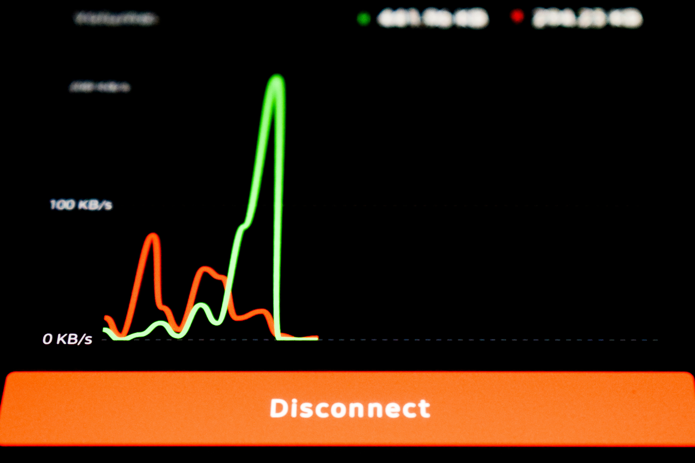

This project leverages machine learning to detect anomalous patterns in network traffic, enabling early identification of potential cyber threats, misconfigurations, and suspicious activities. It is designed to enhance network visibility, strengthen security posture, and support data-driven decision-making in modern IT environments.


Modern networks generate high volumes of traffic, making it difficult to manually detect abnormal behavior. Traditional rule-based systems often fail to capture subtle anomalies, leading to undetected threats or excessive false positives..

This project leverages machine learning to detect anomalous patterns in network traffic, enabling early identification of potential cyber threats, misconfigurations, and suspicious activities. It is designed to enhance network visibility, strengthen security posture, and support data-driven decision-making in modern IT environments..
Technologies: Python, Pandas, Scikit-learn, Network Analysis, Data Visualization, Streamlit. Pellentesque venenatis dolor imperdiet dolor mattis sagittis magna etiam.

bashmkdir -p network-anomaly-detection/{data,notebooks,src,app} && \
cd network-anomaly-detection && \
touch src/preprocessing.py src/model.py src/evaluation.py \
src/__init__.py app/dashboard.py app/__init__.py \
main.py requirements.txt README.md && \
echo "# Network Anomaly Detection" > README.md && \
echo "scikit-learn\npandas\nnumpy\nmatplotlib\nstreamlit\njoblib" > requirements.txt && \
echo "# Entry point\nif __name__ == '__main__':\n pass" > main.py.
RESULTS
• Successfully identified anomalous traffic patterns within the dataset
• Demonstrated potential for real-world intrusion detection systems • Provided actionable insights for improving network security

An AI-based solution for detecting anomalous network behavior, improving threat visibility, and enabling proactive cybersecurity decisions.
Real-World Applications
• Telecom Infrastructure Protection

Applicable to intrusion detection, data center monitoring, enterprise security, and telecom infrastructure protection through intelligent anomaly detection..